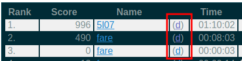
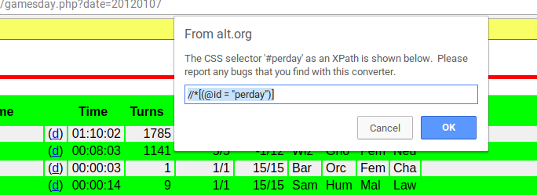
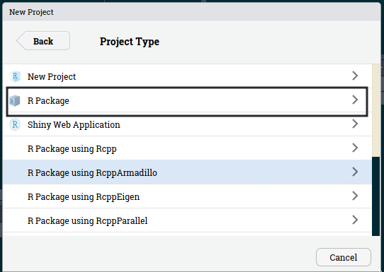
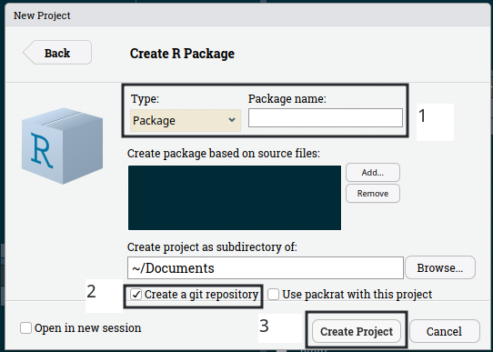

From webscraping data to releasing it as an R package to share with the world: a full tutorial with data from NetHack
November 1, 2018If someone told me a decade ago (back before I'd ever heard the term "roguelike") what I'd be doing today, I would have trouble believing this...
— Josh Ge (@GridSageGames) June 21, 2018
Yet here we are. pic.twitter.com/N6Hh6A4tWl
Update 07-11-2018
The {nethack} package currently on Github contains a sample of 6000 NetHack games played
on the alt.org/nethack public server between April and November 2018. This data was kindly provided by @paxed.
The tutorial in this blog post is still useful if you want to learn more about scraping with R
and building a data package.
Abstract
In this post, I am going to show you how you can scrape tables from a website, and then create a package
with the tidied data to share with the world. The data I am going to scrape comes from a NetHack
public server (link). The data I discuss in this blog post is
available in the {nethack} package I created and I will walk you through the process of releasing
your package on CRAN. However, {nethack} is too large to be on CRAN (75 mb, while the maximum
allowed is 5mb), so you can install it to play around with the data from github:
devtools::install_github("b-rodrigues/nethack")And to use it:
library(nethack)
data("nethack")The data contains information on games played from 2001 to 2018; 322485 rows and 14 columns. I will analyze the data in a future blog post. This post focuses on getting and then sharing the data. By the way, all the content from the public server I scrape is under the CC BY 4.0 license.
I built the package by using the very useful {devtools} package.
Introduction
NetHack is a game released in 1987 that is still being played and developed today. NetHack is a roguelike game, meaning that is has procedurally generated dungeons and permadeath. If you die, you have to start over, and because the dungeons are procedurally generated, this means that you cannot learn the layout of the dungeons you explore or know when ennemies are going to attack or even what ennemies are going to attack. Ennemies are not the only thing that you have to be careful about; you can die from a lot of different events, as you will see in this post. Objects that you find, such as a silver ring, might be helpful in a run, but be cursed in the next run.
The latest version of the game, 3.6.1, was released on April 27th 2018, and this is how it looks like:

The graphics are… bare-bones to say the least. The game runs inside a terminal emulator and is available for any platform. The goal of NetHack is to explore a dungeon and go down every level until you find the Amulet of Yendor. Once you find this Amulet, you have to go all the way back upstairs, enter and fight your way through the Elemental Planes, enter the final Astral Plane, and then finally offer the Amulet of Yendor to your god to finish the game. Needless to say, NetHack is very difficult and players can go years without ever finishing the game.
When you start an new game, you have to create a character, which can have several attributes. You have to choose a race (human, elf, orc, etc), a role (tourist, samurai, mage, etc) and an alignment (neutral, law, chaos) and these choices impact your base stats.
If you can’t get past the ASCII graphics, you can play NetHack with tileset:

You can install NetHack on your computer or you can play online on a public server, such as this one. There are several advantages when playing on a pubic server; the player does not have to install anyhing, and we data enthusiasts have access to a mine of information! For example, you can view the following table which contains data on all the games played on October 25th 2018. These tables start in the year 2001, and I am going to scrape the info from these tables, which will allow me to answer several questions. For instance, what is the floor most players die on? What kills most players? What role do players choose more often? I will explore this questions in a future blog post, but for now I will focus on scraping the data and realeasing it as a package to CRAN.
Scraping the data
To scrape the data I wrote a big function that does several things:
library("tidyverse")
library("rvest")
scrape_one_day <- function(link){
convert_to_seconds <- function(time_string){
time_numeric <- time_string %>%
str_split(":", simplify = TRUE) %>%
as.numeric
time_in_seconds <- time_numeric * c(3600, 60, 1)
if(is.na(time_in_seconds)){
time_in_seconds <- 61
} else {
time_in_seconds <- sum(time_in_seconds)
}
return(time_in_seconds)
}
Sys.sleep(1)
date <- str_extract(link, "\\d{8}")
read_lines_slow <- function(...){
Sys.sleep(1)
read_lines(...)
}
page <- read_html(link)
# Get links
dumplogs <- page %>%
html_nodes(xpath = '//*[(@id = "perday")]//td') %>%
html_children() %>%
html_attr("href") %>%
keep(str_detect(., "dumplog"))
# Get table
table <- page %>%
html_node(xpath = '//*[(@id = "perday")]') %>%
html_table(fill = TRUE)
if(is_empty(dumplogs)){
print("dumplogs empty")
dumplogs <- rep(NA, nrow(table))
} else {
dumplogs <- dumplogs
}
final <- table %>%
janitor::clean_names() %>%
mutate(dumplog_links = dumplogs)
print(paste0("cleaning data of date ", date))
clean_final <- final %>%
select(-x) %>%
rename(role = x_2,
race = x_3,
gender = x_4,
alignment = x_5) %>%
mutate(time_in_seconds = map(time, convert_to_seconds)) %>%
filter(!(death %in% c("quit", "escaped")), time_in_seconds > 60) %>%
mutate(dumplog = map(dumplog_links, ~possibly(read_lines_slow, otherwise = NA)(.))) %>%
mutate(time_in_seconds = ifelse(time_in_seconds == 61, NA, time_in_seconds))
saveRDS(clean_final, paste0("datasets/data_", date, ".rds"))
}Let’s go through each part. The first part is a function that converts strings like “02:21:76” to seconds:
convert_to_seconds <- function(time_string){
time_numeric <- time_string %>%
str_split(":", simplify = TRUE) %>%
as.numeric
time_in_seconds <- time_numeric * c(3600, 60, 1)
if(is.na(time_in_seconds)){
time_in_seconds <- 61
} else {
time_in_seconds <- sum(time_in_seconds)
}
return(time_in_seconds)
}I will use this function on the column that gives the length of the run. However,
before March 2008 this column is always empty, this is why I have the if()...else() statement at
the end; if the time in seconds is NA, then I make it 61 seconds. I do this because I want to keep
runs longer than 60 seconds, something I use filter() for later. But when filtering, if the condition
returns NA (which happens when you do NA > 60) then you get an error, and the function fails.
The website links I am going to scrape all have the date of the day the runs took place. I am going to keep this date because I will need to name the datasets I am going to write to disk:
date <- str_extract(link, "\\d{8}")Next, I define this function:
read_lines_slow <- function(...){
Sys.sleep(1)
read_lines(...)
}It is a wrapper around the readr::read_lines() with a call to Sys.sleep(1). I will be scraping
a lot of pages, so letting one second pass between each page will not overload the servers so much.
I then read the link with read_html() and start by getting the links of the dumplogs:
page <- read_html(link)
# Get links
dumplogs <- page %>%
html_nodes(xpath = '//*[(@id = "perday")]//td') %>%
html_children() %>%
html_attr("href") %>%
keep(str_detect(., "dumplog"))You might be wondering what are dumplogs. Take a look at this screenshot:
knitr::include_graphics("/img/dumplogs.png")
When you click on those d‘s, you land on a page like this one (I
archived it to be sure that this link will not die). These logs contain a lot of info that I want
to keep. To find the right ’xpath’ to scrape the links, "’//[(@id = "perday")]//td’", I used
the SelectorGadget* extension for Chrome. First I chose the table:
knitr::include_graphics("/img/selectorgadget1.png")
and then the links I am interested in:
knitr::include_graphics("/img/selectorgadget2.png")
Putting them together, I get the right “xpath”. But just as with the time of the run, dumplogs are
only available after a certain date. So in case the dumplogs column is empty, I relpace it with NA.
if(is_empty(dumplogs)){
print("dumplogs empty")
dumplogs <- rep(NA, nrow(table))
} else {
dumplogs <- dumplogs
}The rest is quite simple:
# Get table
table <- page %>%
html_node(xpath = '//*[(@id = "perday")]') %>%
html_table(fill = TRUE)
final <- table %>%
janitor::clean_names() %>%
mutate(dumplog_links = dumplogs)
print(paste0("cleaning data of date ", date))I scrape the table, and then join the dumplog links to the table inside a new column called “dumplog_links”.
Because what follows is a long process, I print a message to let me know the progress of the scraping.
Now the last part:
clean_final <- final %>%
select(-x) %>%
rename(role = x_2,
race = x_3,
gender = x_4,
alignment = x_5) %>%
mutate(time_in_seconds = map(time, convert_to_seconds)) %>%
filter(!(death %in% c("quit", "escaped")), time_in_seconds > 60) %>%
mutate(dumplog = map(dumplog_links, ~possibly(read_lines_slow, otherwise = NA)(.))) %>%
mutate(time_in_seconds = ifelse(time_in_seconds == 61, NA, time_in_seconds))I first remove and remane columns. Then I convert the “time” column into seconds and also remove
runs that lasted less than 60 seconds or that ended either in “quit” (the player left the game)
or “escaped” (the player left the dungeon and the game ended immediately). There are a lot of runs
like that and they’re not interesting. Finally, and this is what takes long, I create a new
list-column where each element is the contents of the dumplog for that run. I wrap read_lines_slow()
around purrr::possibly() because dumplogs are missing for certains runs and when I try to read
them I get an 404 error back. Getting such an error stops the whole process, so with purrr::possibly()
I can specify that in that case I want NA back. Basically, a function wrapped inside purrr::possibly()
never fails! Finally, if a game lasts for 61 seconds, I convert it back to NA (remember this was
used to avoid having problems with the filter() function).
Finally, I export what I scraped to disk:
saveRDS(clean_final, paste0("datasets/data_", date, ".rds"))This is where I use the date; to name the data. This is really important because scraping takes a very long time, so if I don’t write the progress to disk as it goes, I might lose hours of work if my internet goes down, or if computer freezes or whatever.
In the lines below I build the links that I am going to scrape. They’re all of the form:
https://alt.org/nethack/gamesday.php?date=YYYYMMDD so it’s quite easy to create a list of
dates to scrape, for example, for the year 2017:
link <- "https://alt.org/nethack/gamesday.php?date="
dates <- seq(as.Date("2017/01/01"), as.Date("2017/12/31"), by = "day") %>%
str_remove_all("-")
links <- paste0(link, dates)Now I can easily scrape the data. To make extra sure that I will not have problems during the
scraping process, for example if on a given day no games were played (and thus there is no table
to scrape, which would result in an error) , I use the same trick as above by using purrr::possibly():
map(links, ~possibly(scrape_one_day, otherwise = NULL)(.))The scraping process took a very long time. I scraped all the data by letting my computer run for three days!
After this long process, I import all the .rds files into R:
path_to_data <- Sys.glob("datasets/*.rds")
nethack_data <- map(path_to_data, readRDS)and take a look at one of them:
nethack_data[[5812]] %>%
View()Let’s convert the “score” column to integer. For this, I will need to convert strings that look like “12,232” to integers. I’ll write a short function to do this:
to_numeric <- function(string){
str_remove_all(string, ",") %>%
as.numeric
}nethack_data <- nethack_data %>%
map(~mutate(., score = to_numeric(score)))Let’s merge the data into a single data frame:
nethack_data <- bind_rows(nethack_data)Now that I have a nice data frame, I will remove some columns and start the process of making a
packages. I remove the columns that I created and that are now useless (such as the dumplog_links
column).
nethack_data <- nethack_data %>%
select(rank, score, name, time, turns, lev_max, hp_max, role, race, gender, alignment, death,
date, dumplog)Export this to .rds format, as it will be needed later:
saveRDS(nethack_data, "nethack_data.rds")Making a package to share your data with the world
As stated in the beginning of this post, I will walk you through the process of creating and releasing your package on CRAN. However, the data I scraped was too large to be made available as a CRAN package. But you can still get the data from Github (link is in the abstract at the beginning of the post).
Making a data package is a great way to learn how to make packages, because it is relatively easy to do (for example, you do not need to write unit tests). First, let’s start a new project in RStudio:

Then select “R package”:

Then name your package, create a git repository and then click on “Create Project”:

RStudio wil open the hello.R script which you can now modify. You got to learn from the best, so
I suggest that you modify hello.R by taking inspiration from the babynames package made by Hadley
Wickham which you can find here.
You do not need the first two lines, and can focus on lines 4 to 13. Then, rename the script to
data.R. This is how {nethack}'s looks like:
#' NetHack runs data.
#'
#' Data on NetHack runs scraped from https://alt.org/nethack/gamesday.php
#'
#' @format A data frame with 14 variables: \code{rank}, \code{score},
#' \code{name}, \code{time}, \code{turns}, \code{lev_max}, \code{hp_max}, \code{role}, \code{race},
#' \code{gender}, \code{alignment}, \code{death}, \code{date} and \code{dumplog}
#' \describe{
#' \item{rank}{The rank of the player on that day}
#' \item{score}{The score the player achieved on that run}
#' \item{name}{The name of the player}
#' \item{time}{The time the player took to finish the game}
#' \item{turns}{The number of turns the player played before finishing the game}
#' \item{lev_max}{First digit: the level the player died on; second digit: the deepest explored level}
#' \item{hp_max}{The maximum character health points the player achieved}
#' \item{role}{The role the player chose to play as}
#' \item{race}{The race the player chose to play as}
#' \item{gender}{The gender the playr chose to play as}
#' \item{alignement}{The alignement the playr chose to play as}
#' \item{death}{The reason of death of the character}
#' \item{date}{The date the game took place}
#' \item{dumplog}{The log of the end game; this is a list column}
#' }
"nethack"The comments are special, the “#” is followed by a '; these are special comments that will be
parsed by roxygen2::roxygenise() and converted to documentation files.
Next is the DESCRIPTION file. Here is how {nethack}’s looks like:
Package: nethack
Type: Package
Title: Data from the Video Game NetHack
Version: 0.1.0
Authors@R: person("Bruno André", "Rodrigues Coelho", email = "bruno@brodrigues.co",
role = c("aut", "cre"))
Description: Data from NetHack runs played between 2001 to 2018 on
<https://alt.org/nethack/>, a NetHack public server.
Depends: R (>= 2.10)
License: CC BY 4.0
Encoding: UTF-8
LazyData: true
RoxygenNote: 6.1.0Adapt yours accordingly. I chose the license CC BY 4.0 because this was the licence under which
the original data was published. It is also a good idea to add a Vignette:
devtools::use_vignette("the_nethack_package")Vignettes are very useful documentation with more details and examples.
It is also good practice to add the script that was used to scrape the data. Such scripts go into
data-raw/. Create this folder with:
devtools::use_data_raw()This creates the data-raw/ folder where I save the script that scrapes the data. Now is time to
put the data in the package. Start by importing the data:
nethack <- readRDS("nethack_data.rds")To add the data to your package, you can use the following command:
devtools::use_data(nethack, compress = "xz")This will create the data/ folder and put the data in there in the .rda format. I use the “compress”
option to make the data smaller. You can now create the documentation by running:
roxygen2::roxygenise()Pay attention to the log messages: you might need to remove files (for example the documentation
hello.R, under the folder man/).
Now you can finaly run R CMD Check by clicking the Check button on the “Build” pane:

This will extensively check the package for ERRORS, WARNINGS and NOTES. You need to make sure
that the check passes without any ERRORS or WARNINGS and try as much as possible to remove all
NOTES too. If you cannot remove a NOTE, for example in my case the following:
checking installed package size ... NOTE
installed size is 169.7Mb
sub-directories of 1Mb or more:
data 169.6Mb
R CMD check results
0 errors | 0 warnings | 1 note You should document it in a new file called cran-comments.md:
## Test environments
* local openSUSE Tumbleweed install, R 3.5.1
* win-builder (devel and release)
## R CMD check results
There were no ERRORs or WARNINGs.
There was 1 NOTE:
* installed size is 169.7Mb
sub-directories of 1Mb or more:
data 169.6Mb
The dataset contains 17 years of NetHack games played, hence the size. This package will not be updated often (max once a year).Once you have eliminated all errors and warnings, you are almost ready to go.
You need now to test the package on different platforms. This depends a bit on the system you run, for me, because I run openSUSE (a GNU+Linux distribution) I have to test on Windows. This can be done with:
devtools::build_win(version = "R-release")and:
devtools::build_win(version = "R-devel")Explain that you have tested your package on several platforms in the cran-comments.md file.
Finally you can add a README.md and a NEWS.md file and start the process of publishing the
package on CRAN:
devtools:release()If you want many more details than what you can find in this blog post, I urge you to read “R Packages” by Hadley Wickham, which you can read for free here.
Hope you enjoyed! If you found this blog post useful, you might want to follow me on twitter for blog post updates or buy me an espresso.